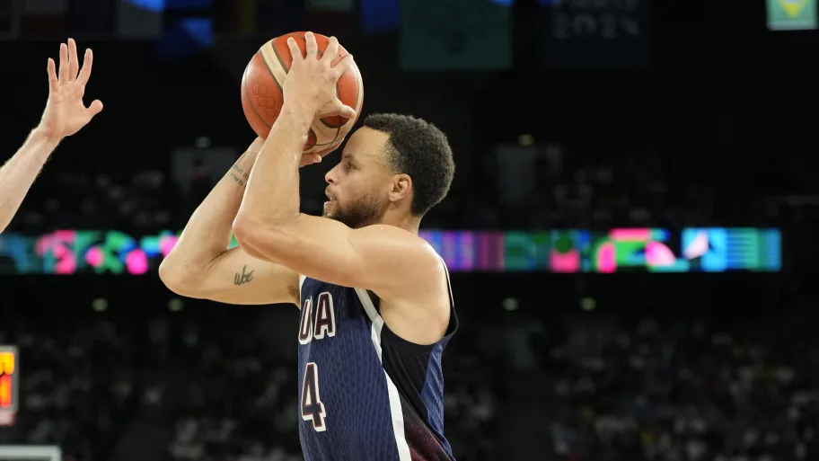

How to shoot a basketball
- Keep your feet no further than shoulder width apart, preferably closer together, and slightly staggered.
- Flex your knees slightly.
- Turn more in the air and jump forward, keeping your shoulders back, if you need to shoot a longer shot.
- Dip the ball down to your waist or thigh.
- Position your elbow so it's inline with your shoulder, not directly under the ball.
- Position your shooting hand so that your fingertips are perpendicular to the seams in the ball
- Straighten your knees and jump.
- Jump slightly forward when you shoot, making sure your shoulders lean back and are relaxed.
- Push the ball upward with your shooting hand.
- Release the ball.
- Follow Through!